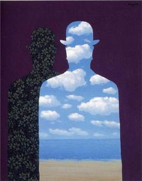
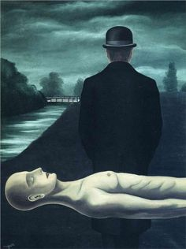
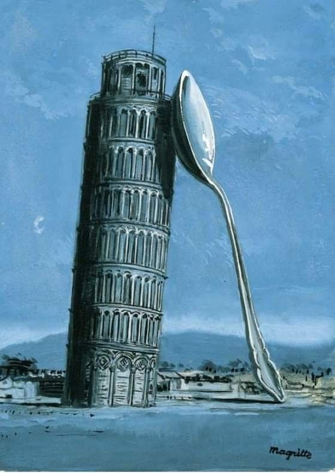
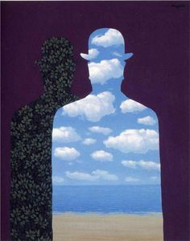
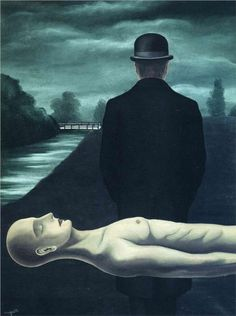
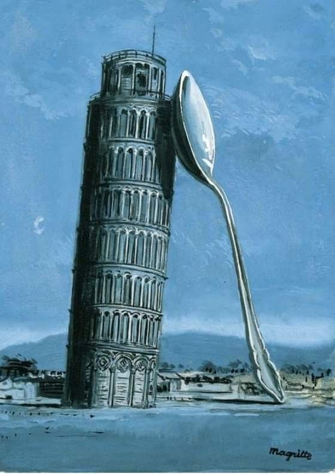
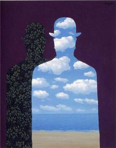
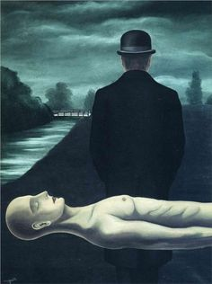
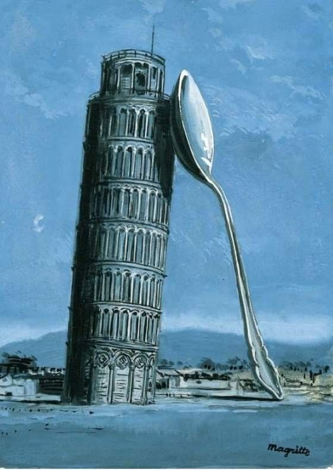
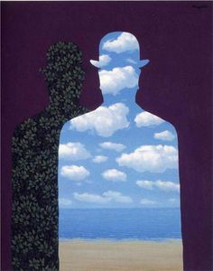
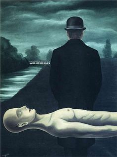
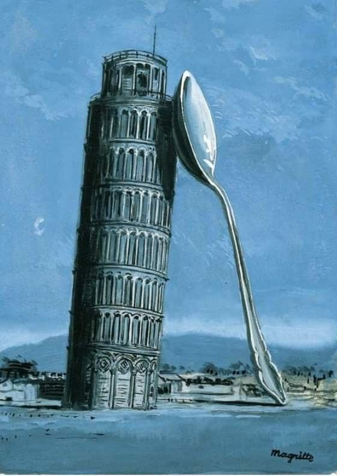
René François Ghislain Magritte è considerato il maggior pittore del surrealismo in Belgio.Dopo iniziali vicinanze al cubismo e al futurismo, il suo stile s'incentrò su una tecnica raffigurativa accuratissima basata sul trompe l'oeil, alla pari di Salvador Dalí e di Delvaux, ma senza il ricorso alla simbologia di tipo paranoide del primo o di tipo erotico-anticheggiante del secondo.
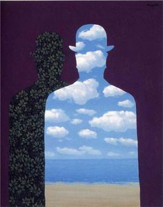
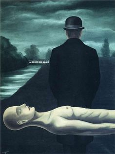
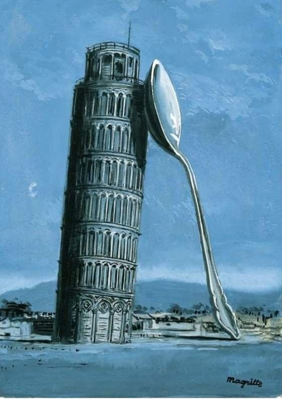